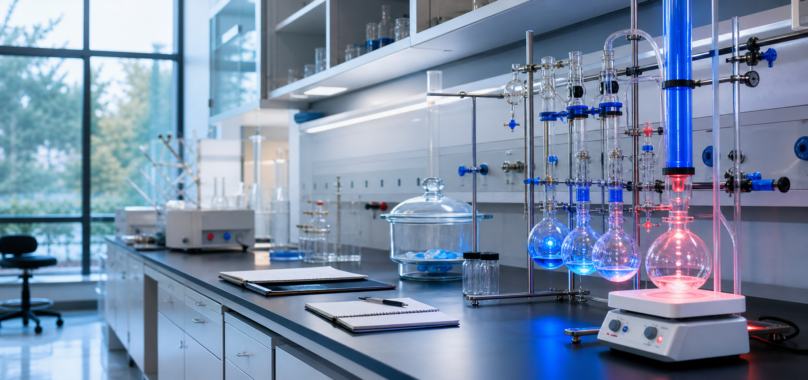
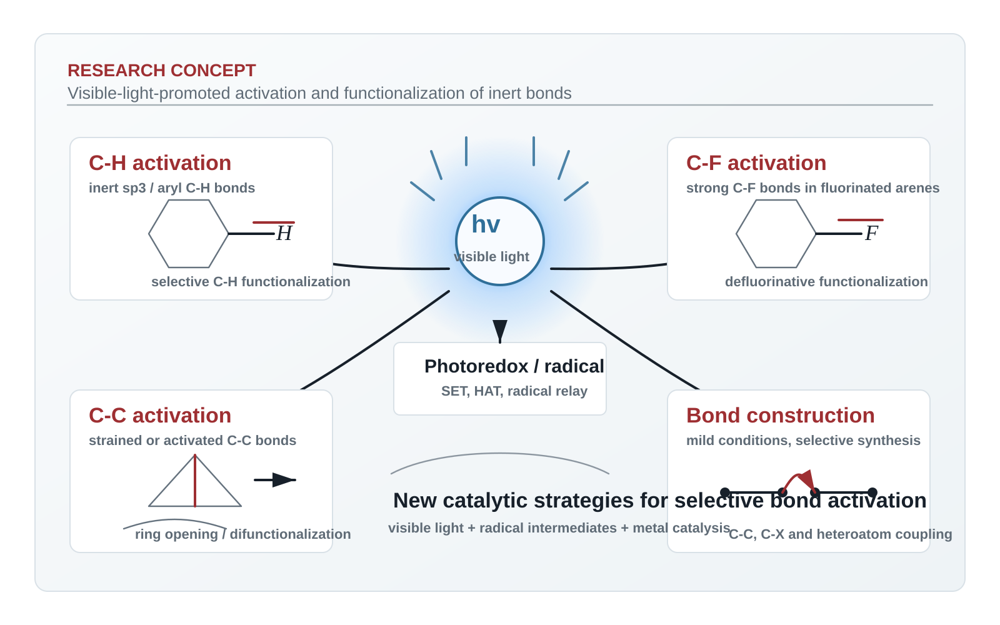

Research Focus

The group develops visible-light-promoted catalytic strategies for the activation and transformation of inert C-H, C-C, and C-F bonds. These studies combine photoredox catalysis, radical chemistry, and asymmetric metal catalysis to enable selective bond construction under mild conditions.
View research directionsWebsite Guide
Start here
Recruiting